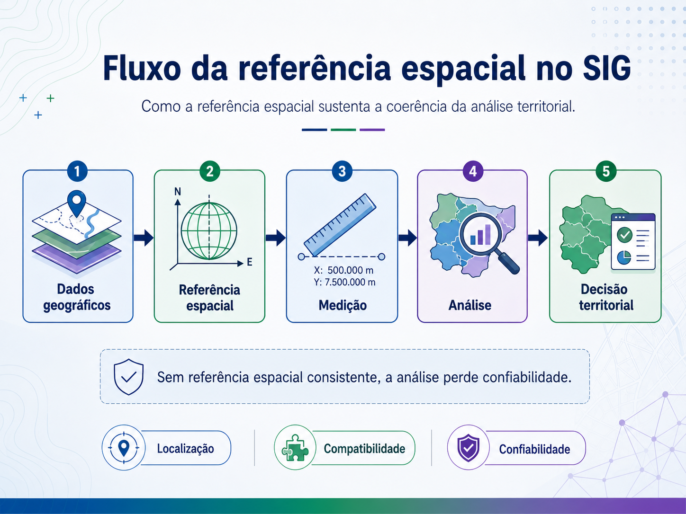
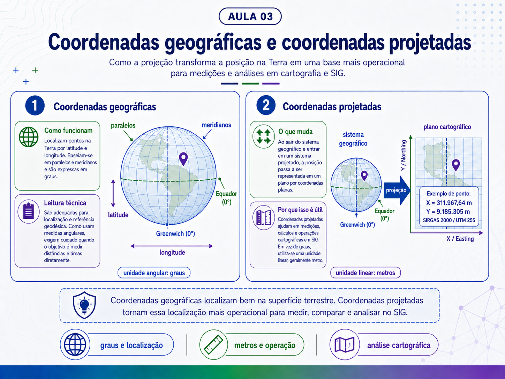
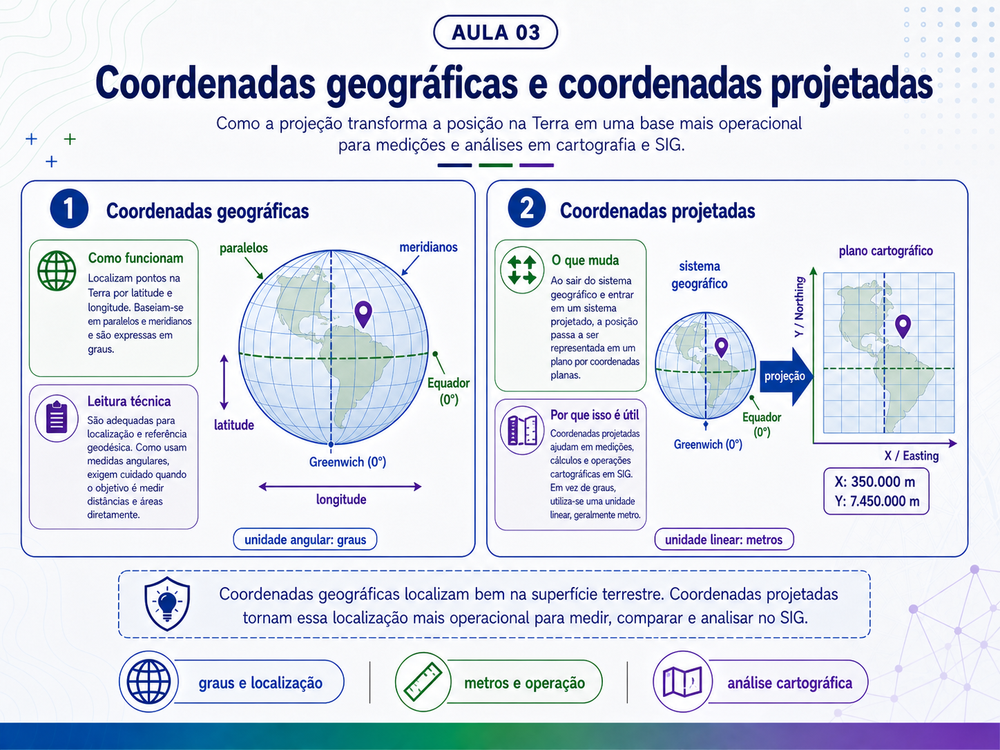
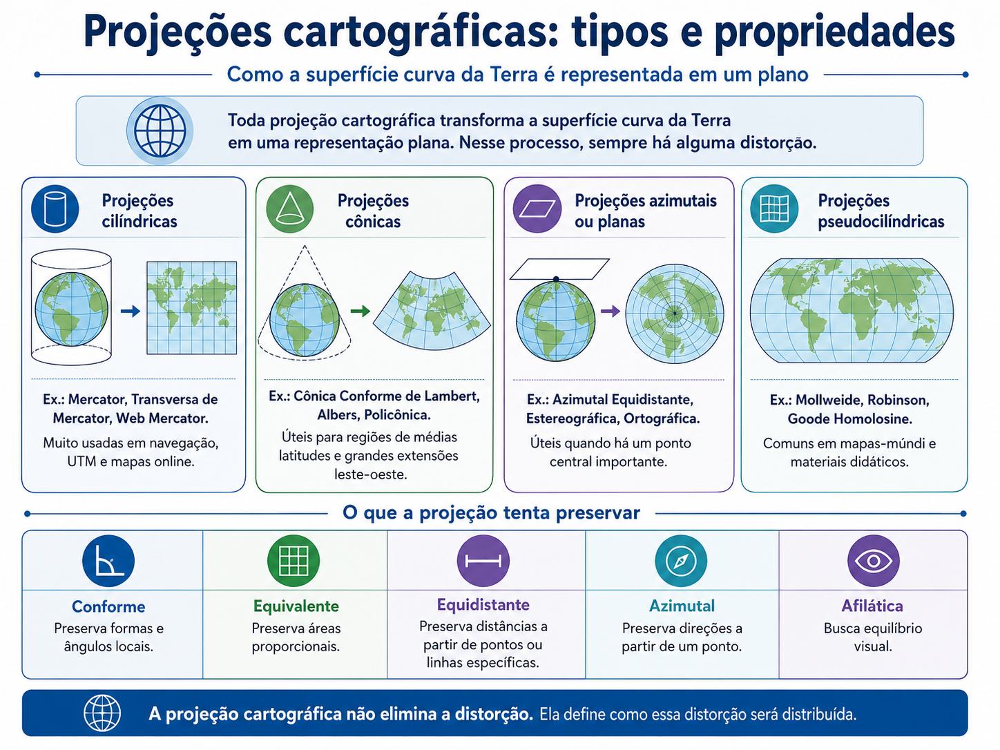
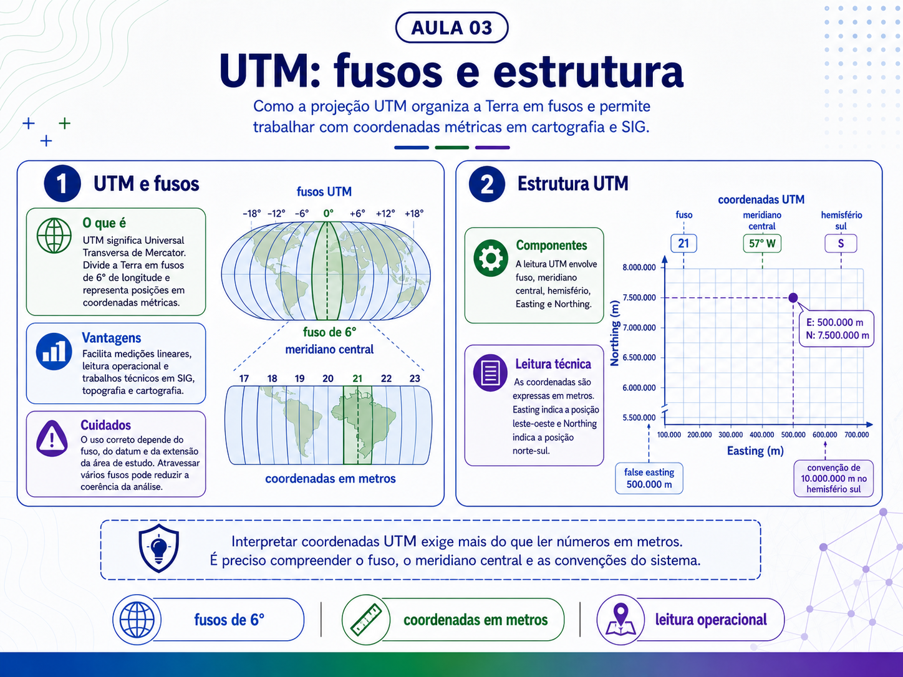
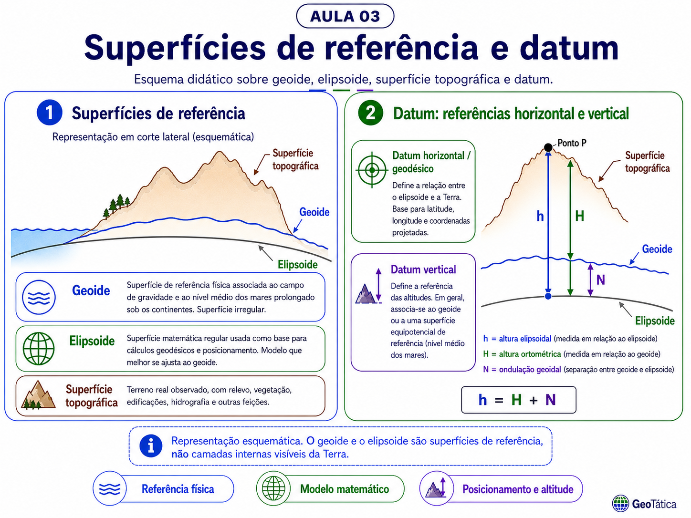
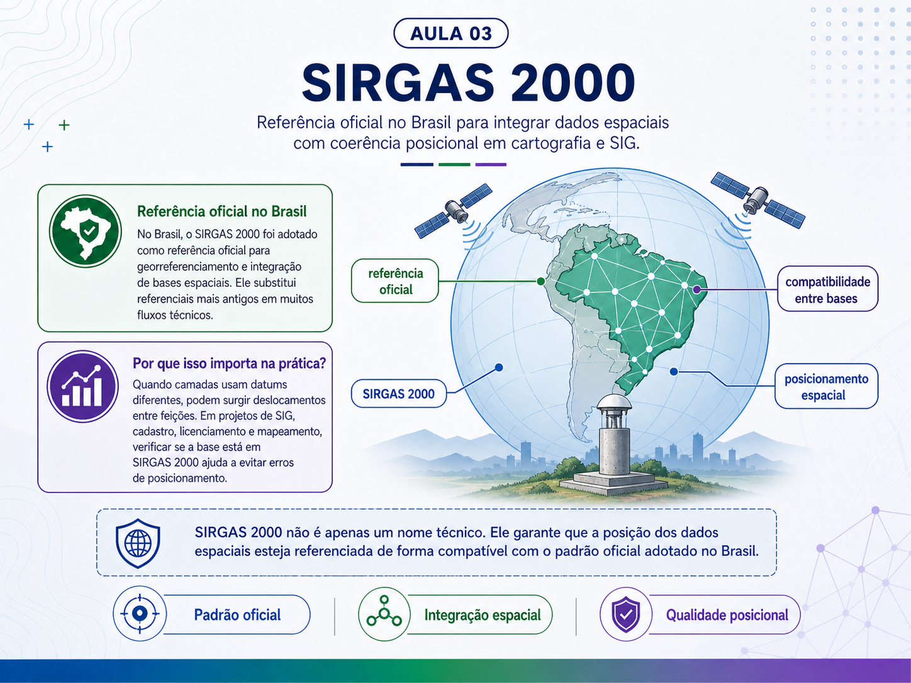
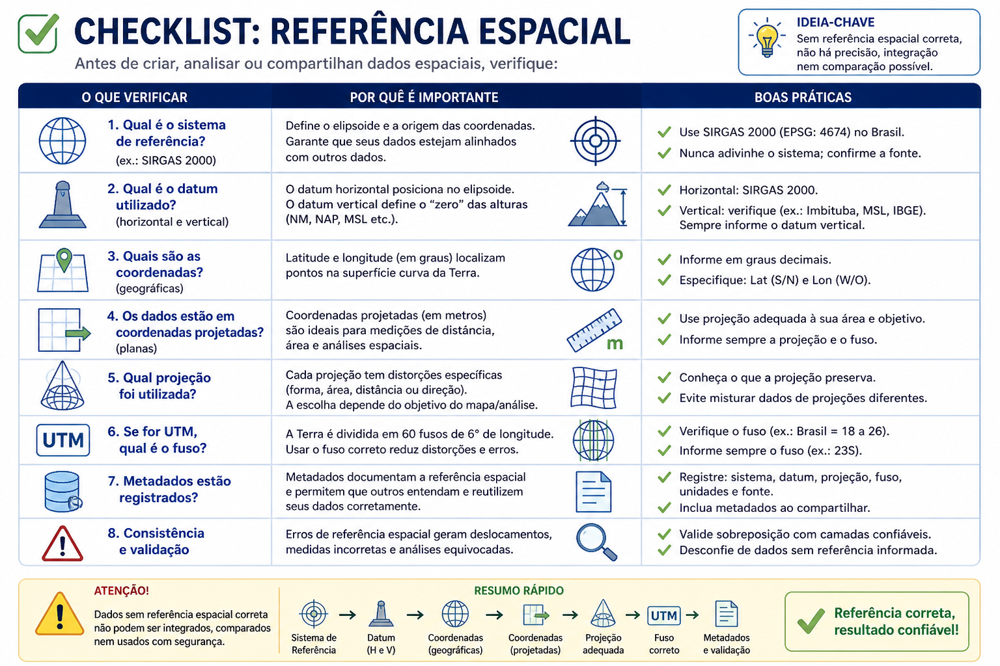

Uma leitura prática sobre coordenadas geográficas, coordenadas projetadas, projeções cartográficas, UTM, referência espacial, datum, SIRGAS 2000 e transformação entre sistemas de referência.
Aula 03latitude e longitudeprojeçõesUTMdatumSIRGAS 2000EPSG
Vídeo da aula
Comece pelo vídeo
A Aula 03 organiza uma base essencial para qualquer rotina em SIG: entender como os dados são localizados, medidos, projetados e documentados. Antes de cruzar camadas, calcular áreas ou publicar mapas, é necessário conferir a referência espacial.
Antes de medir, cruzar camadas ou publicar um mapa, é necessário entender como a posição dos dados é definida.
Em Sistemas de Informações Geográficas, a referência espacial orienta a leitura das camadas, a coerência das medições e a confiabilidade das análises. Um dado pode parecer corretamente posicionado na tela, mas apresentar inconsistência técnica quando o sistema de referência, o datum, a projeção ou o fuso são utilizados sem a devida compreensão dos seus fundamentos.
Quando a referência espacial está correta, as camadas tendem a se sobrepor com coerência, as medições ficam mais consistentes e o produto cartográfico comunica melhor a informação. Quando essa referência está ausente, incorreta ou mal interpretada, podem ocorrer deslocamentos, erros de medida e análises incompatíveis com a finalidade do projeto.

Figura 1. Fluxo da referência espacial. Dados geográficos, referência espacial, medição, análise e decisão territorial formam uma sequência técnica dependente.
Sistemas de coordenadas não são detalhe de configuração. Eles sustentam a coerência espacial da análise.
Coordenadas geográficas
Coordenadas geográficas, latitude e longitude
As coordenadas geográficas localizam pontos na superfície terrestre por meio de duas medidas angulares: latitude e longitude. Elas se baseiam em uma rede formada por paralelos e meridianos.
Paralelos
Referência da latitude
Paralelos são linhas imaginárias traçadas no sentido leste-oeste. O principal paralelo é o Equador, que divide a Terra em hemisfério norte e hemisfério sul.
Meridianos
Referência da longitude
Meridianos são linhas imaginárias no sentido norte-sul. O principal meridiano de referência é Greenwich, usado como origem da longitude.
Latitude
A latitude indica a posição norte-sul de um ponto em relação ao Equador. Ela varia de 0° no Equador até +90° ao norte e -90° ao sul.
Direção
Representação comum
Norte do Equador
Latitude positiva
Sul do Equador
Latitude negativa
Uma coordenada com latitude 20° S também pode aparecer como -20° em graus decimais. Para o Brasil, as latitudes aparecem, em geral, com valores negativos, porque a maior parte do território está ao sul do Equador. A exceção ocorre em áreas do hemisfério norte, como parte de Roraima, Amapá, Amazonas e Pará.
Longitude
A longitude indica a posição leste-oeste de um ponto em relação ao Meridiano de Greenwich. Ela varia de 0° em Greenwich até +180° a leste e -180° a oeste.
Direção
Representação comum
Leste de Greenwich
Longitude positiva
Oeste de Greenwich
Longitude negativa
Uma coordenada com longitude 45° O também pode aparecer como -45° em graus decimais. Para o Brasil, as longitudes aparecem, em geral, com valores negativos, porque o país está a oeste do Meridiano de Greenwich.
Coordenadas em graus
Latitude e longitude são medidas angulares. Por isso, são expressas em graus, minutos e segundos ou em graus decimais. Em SIG, é comum trabalhar com graus decimais, principalmente em bases digitais, planilhas, arquivos CSV, sistemas GNSS, webmaps e plataformas de visualização.
Graus não são metros. Quando o objetivo é medir distância, área, perímetro ou deslocamento com precisão operacional, é necessário avaliar se o dado deve ser trabalhado em um sistema projetado.

Figura 2. Coordenadas geográficas. Latitude e longitude funcionam em conjunto para localizar pontos na superfície terrestre.Geográficas x projetadas
Coordenadas geográficas e coordenadas projetadas
As coordenadas geográficas são adequadas para localização e referência global, mas nem sempre são as mais indicadas para medições operacionais em SIG. Para medir distâncias, áreas, perímetros e deslocamentos, muitas análises exigem coordenadas projetadas.
Geográficas
Graus
Representam posições na superfície terrestre usando latitude e longitude. São adequadas para localização geodésica, mas exigem cuidado para medições diretas.
Projetadas
Metros
Resultam da transformação da superfície curva da Terra para uma superfície plana. Facilitam cálculos de distância, área e perímetro.
Aspecto
Coordenadas geográficas
Coordenadas projetadas
Unidade
Graus
Metros ou outra unidade linear
Base
Superfície curva
Plano cartográfico
Uso comum
Localização global, GPS/GNSS, bases globais e webmaps
Medição, análise local, buffers, área, perímetro e produção técnica
Cuidado
Não medir área diretamente sem critério
Escolher projeção adequada à finalidade

Figura 3. Coordenadas geográficas x coordenadas projetadas. A diferença entre graus e metros muda a forma de localizar, medir e analisar dados no SIG.
Coordenadas geográficas localizam pontos na superfície terrestre. Coordenadas projetadas tornam essa localização mais operacional para medir, comparar e analisar no SIG.
Projeções cartográficas
Projeções cartográficas, tipos e propriedades
Toda projeção cartográfica transforma a superfície curva da Terra em uma representação plana. Esse processo é necessário porque mapas, telas, cartas e layouts são planos. O problema é que não é possível transformar uma superfície curva em um plano sem gerar distorções.
Toda projeção altera alguma propriedade espacial. Ela pode distorcer área, forma, distância ou direção. A escolha da projeção depende do objetivo do mapa, da área de estudo e do tipo de análise.
Cilíndricas
Mercator, Transversa de Mercator e Web Mercator
Muito usadas em navegação, UTM e mapas online. Exigem cuidado em análises de área, distância e comparação territorial.
Cônicas
Lambert, Albers e Policônica
Úteis para regiões que se estendem no sentido leste-oeste, especialmente em médias latitudes.
Azimutais
Equidistante, Estereográfica e Ortográfica
Úteis quando existe um ponto central importante na análise, como polos, antenas, capitais ou áreas de influência.
Pseudocilíndricas
Mollweide, Robinson e Goode
Comuns em mapas-múndi e materiais didáticos. Ajudam na visualização global, mas não devem ser escolhidas automaticamente para análises locais.
Tipo
Preserva melhor
Exemplo de uso
Conforme
Formas e ângulos locais
Navegação, cartas topográficas, UTM
Equivalente
Áreas proporcionais
Mapas temáticos e comparação territorial
Equidistante
Distâncias a partir de pontos ou linhas específicas
Rotas e áreas de influência
Azimutal
Direções a partir de um ponto
Navegação e mapas polares
Afilática
Equilíbrio visual
Mapas-múndi didáticos

Figura 4. Projeções cartográficas. A projeção não elimina a distorção. Ela define como essa distorção será distribuída.UTM
UTM, fusos e estrutura
A UTM, Universal Transversa de Mercator, é uma projeção muito utilizada em cartografia, topografia, geoprocessamento e trabalhos técnicos. Ela organiza a superfície terrestre em fusos e permite trabalhar com coordenadas métricas, o que facilita medições e análises em SIG.
Fuso
Faixa de 6°
A Terra é dividida em 60 fusos UTM, numerados de oeste para leste. O Brasil é recoberto pelos fusos 18 ao 26.
Easting
Coordenada leste
Expressa em metros. A UTM usa false easting de 500.000 m no meridiano central para evitar valores negativos.
Northing
Coordenada norte
No hemisfério sul, o Equador recebe 10.000.000 m. No hemisfério norte, o Equador recebe 0 m.
Northing no hemisfério sul e norte
No hemisfério sul, utiliza-se a convenção de 10.000.000 m no Equador, reduzindo os valores em direção ao sul. Essa convenção evita coordenadas negativas.
No hemisfério norte, a lógica é diferente: o Equador recebe o valor 0 m de northing, e os valores aumentam em direção ao norte. Esse cuidado é importante no Brasil porque parte do território está no hemisfério norte, como áreas de Roraima, Amapá, Amazonas e Pará.
UTM no Brasil
A UTM é muito usada no Brasil, mas exige cuidado porque o país possui dimensão continental e atravessa diversos fusos. Quando uma área de estudo atravessa mais de um fuso, a escolha da projeção deve ser avaliada conforme escala, extensão territorial e finalidade da análise.
Belo Horizonte e grande parte de Minas Gerais estão na zona UTM 23S em SIRGAS 2000. Em softwares de SIG, esse sistema aparece frequentemente como EPSG:31983, correspondente a SIRGAS 2000 / UTM zone 23S.

Figura 5. UTM, fusos e estrutura. Interpretar coordenadas UTM exige compreender fuso, meridiano central, hemisfério, datum, easting e northing.Base geodésica
Qual referência posiciona essas coordenadas na Terra?
Até aqui, vimos como as coordenadas localizam pontos, como as projeções transformam a superfície curva em plano e como a UTM organiza coordenadas métricas em fusos.
Mas ainda falta uma pergunta essencial: qual é a referência usada para posicionar essas coordenadas na Terra? É aqui que entram as superfícies de referência e os datums.
Superfícies e datum
Superfícies de referência e datum
Para localizar pontos na Terra, precisamos definir uma referência. O desafio é que a Terra possui uma forma irregular, com variações de relevo, diferenças gravitacionais e uma superfície física complexa.
Por isso, a cartografia e a geodésia usam modelos de referência para representar a Terra e permitir cálculos de posição, distância, área e altitude.
Superfície topográfica
Terreno real
Corresponde ao terreno observado: montanhas, vales, rios, áreas urbanas, edificações, vegetação, cortes, aterros e demais irregularidades.
Geoide
Referência física
Superfície associada ao campo gravitacional da Terra, usada como referência para estudos de altitude, nivelamento e referência vertical.
Elipsoide
Modelo matemático
Superfície regular usada para cálculos geodésicos, definição de coordenadas, transformações e estruturação de sistemas de referência.
Datum horizontal ou geodésico
O datum horizontal define a relação entre o elipsoide e a Terra. Ele serve de base para latitude, longitude e coordenadas projetadas. Na prática, influencia a posição planimétrica dos dados.
Datum vertical
O datum vertical define a referência das altitudes. Ele indica a partir de qual superfície as alturas são medidas e é importante em estudos de relevo, drenagem, engenharia, risco, hidrologia, obras e modelagem de terreno.
Quando a superfície topográfica é medida em altitude, é necessário indicar qual referência vertical foi utilizada. Em levantamentos com GNSS, por exemplo, pode aparecer a altura elipsoidal, referida ao elipsoide. Já em muitos produtos cartográficos, topográficos e ambientais, utiliza-se a altitude ortométrica, associada a uma referência vertical oficial.
No Brasil, a referência altimétrica oficial está associada à Rede Altimétrica de Alta Precisão do Sistema Geodésico Brasileiro. Grande parte das altitudes da rede está referida ao Datum de Imbituba, definido a partir do nível médio do mar observado no Porto de Imbituba, em Santa Catarina.
Para a porção da rede localizada no Amapá, utiliza-se também a referência de Santana/AP, devido à impossibilidade histórica de conexão dessa região ao Datum de Imbituba por nivelamento geométrico de alta precisão.
Aplicação
O que representa
Cuidado técnico
Levantamento topográfico
Pontos, cotas e feições do terreno
Informar a referência altimétrica utilizada
Estudos de relevo
Declividade, hipsometria e formas do terreno
Verificar se a elevação é ortométrica ou elipsoidal
Obras de engenharia
Cortes, aterros, greides e drenagem
Controlar cotas e datum vertical
Modelagem de terreno
MDT, MDE, nuvem de pontos
Conferir origem, resolução e referência vertical
Drenagem e análise ambiental
Escoamento, bacias e áreas suscetíveis
Usar modelo de elevação compatível com o objetivo

Figura 6. Superfícies de referência e datum. O geoide se aproxima da referência física, o elipsoide organiza o cálculo e o datum controla como posição e altitude são referenciadas.SIRGAS 2000
SIRGAS 2000
O SIRGAS 2000 é o sistema geodésico de referência oficialmente adotado no Brasil. Ele é utilizado para garantir coerência posicional entre bases espaciais e reduzir incompatibilidades entre camadas produzidas por diferentes instituições, métodos e épocas.
Em projetos de SIG, cadastro, licenciamento, mapeamento e georreferenciamento, conferir se os dados estão em SIRGAS 2000 ajuda a evitar erros de posicionamento.
Cuidados práticos
Antes de iniciar a análise
Verifique o datum do projeto, o datum de cada camada, camadas sem sistema definido, bases antigas e se o layout final informa a referência adotada.
Definir x reprojetar
Duas ações diferentes
Definir CRS informa ao software qual sistema o dado já utiliza. Reprojetar transforma o dado de um sistema para outro.
Confundir definir CRS e reprojetar pode gerar deslocamentos e erros difíceis de perceber. Conferir o datum é uma etapa básica de qualidade espacial.

Figura 7. SIRGAS 2000 no Brasil. O SIRGAS 2000 organiza a referência geodésica oficial adotada no país.Checklist
Checklist de referência espacial
Antes de criar, analisar, publicar ou compartilhar dados espaciais, é importante verificar se a referência espacial está corretamente documentada. Esse checklist ajuda a reduzir erros de sobreposição, deslocamento, medição e interpretação.
1
Sistema de referência: verifique se o dado informa SIRGAS 2000, WGS 84, SAD69, Córrego Alegre ou outro sistema.
2
Datum: confira datum horizontal e, quando houver altitude, datum vertical.
3
Coordenadas: identifique se estão em graus ou metros antes de medir.
4
Projeção: avalie se a projeção é adequada à finalidade, extensão territorial e escala.
5
UTM: confira fuso, hemisfério e datum.
6
Metadados: registre fonte, data, escala, sistema de referência, método de produção e limitações.
7
Validação: compare com bases confiáveis, verifique deslocamentos e teste medições.

Figura 8. Checklist de referência espacial. Sem referência espacial correta, não há precisão, integração nem comparação confiável.Casos práticos
EPSG, datums antigos, WGS 84, ProGriD, ArcGIS e QGIS
Este bloco entra ao final porque funciona como aplicação prática da teoria. Depois de entender coordenadas, projeção, UTM, superfícies de referência e datum, fica mais fácil compreender por que dados antigos podem aparecer deslocados no SIG e por que o software pergunta qual transformação geográfica deve ser usada.
O que é código EPSG?
Nos softwares de SIG, os sistemas de referência costumam ser localizados por códigos EPSG. Esses códigos funcionam como identificadores padronizados para sistemas geográficos e projetados. Na prática, em vez de digitar o nome completo do sistema, é comum pesquisar diretamente pelo código na barra de busca do QGIS, ArcGIS e outros programas.
Código
Sistema
Unidade
Observação prática
EPSG:4225
Córrego Alegre 1970-72
Graus
Referencial histórico brasileiro
EPSG:4291
SAD69
Graus
Uma das definições EPSG ligadas ao SAD69
EPSG:4618
SAD69 Brazil
Graus
Também aparece em implementações ligadas ao SAD69
EPSG:4674
SIRGAS 2000
Graus
Sistema geográfico oficial atual no Brasil
EPSG:31983
SIRGAS 2000 / UTM zona 23S
Metros
Muito usado em Minas Gerais, incluindo Belo Horizonte
EPSG:4326
WGS 84
Graus
Muito comum em GPS, Google Earth e bases globais
Córrego Alegre, SAD69 e SIRGAS 2000
No Brasil, a referência espacial passou por uma evolução importante. Você pode encontrar bases antigas em Córrego Alegre, muitas bases históricas em SAD69 e bases atuais em SIRGAS 2000. Essa mudança não foi apenas uma troca de nome. Ela representa uma evolução na forma de materializar a posição na superfície terrestre.
Córrego Alegre
Referencial histórico
Associado a uma fase da cartografia apoiada em redes terrestres e marcos físicos. Ainda pode aparecer em acervos cartográficos antigos.
SAD69
Base histórica
Foi amplamente utilizado na América do Sul e em bases brasileiras por décadas. Ainda aparece em bases cadastrais, cartográficas e ambientais antigas.
SIRGAS 2000
Referencial geocêntrico
Compatível com a era do posicionamento por satélite, redes GNSS e referenciais globais.
Referenciais geocêntricos e topocêntricos
Essa evolução também pode ser entendida pela diferença entre referenciais topocêntricos e geocêntricos. Segundo o IBGE, a definição e a orientação do Córrego Alegre e do SAD69 são topocêntricas, pois o ponto de origem e orientação está na superfície terrestre. Já o SIRGAS 2000 possui definição geocêntrica, com origem dos seus três eixos cartesianos localizada no centro de massa da Terra.
Na prática, isso ajuda a explicar por que bases antigas em Córrego Alegre ou SAD69 podem apresentar deslocamentos quando são combinadas com bases atuais em SIRGAS 2000. A diferença não está apenas no nome do datum, mas na própria concepção do referencial, na forma de materialização da rede geodésica e nas técnicas usadas para determinar as coordenadas.
O WGS 84, muito comum em GPS, imagens, Google Earth, bases globais e webmaps, também está associado à lógica geocêntrica. Por isso, ele costuma aparecer próximo ao SIRGAS 2000 em muitas aplicações cartográficas usuais, embora os dois não devam ser tratados automaticamente como equivalentes em trabalhos que exigem controle geodésico ou documentação formal.
Referencial
Concepção
Como interpretar no SIG
Córrego Alegre
Topocêntrico / clássico
Referencial antigo, apoiado em redes terrestres e ponto datum na superfície. Pode exigir transformação adequada para uso com SIRGAS 2000.
SAD69
Topocêntrico / clássico
Referencial histórico muito presente em bases antigas. A combinação direta com bases atuais pode gerar deslocamento espacial.
SIRGAS 2000
Geocêntrico
Referencial oficial atual no Brasil, compatível com a geodésia moderna, redes GNSS e posicionamento por satélite.
WGS 84
Geocêntrico
Referencial global muito usado em GPS, bases internacionais, imagens e webmaps. Próximo ao SIRGAS 2000 em muitos usos cartográficos, mas não idêntico para fins de alta precisão.
Cuidado conceitual: topocêntrico ou geocêntrico não indica se a coordenada está em graus ou em metros. Essa classificação se refere à origem, orientação e materialização do referencial geodésico. Um dado em Córrego Alegre, SAD69, SIRGAS 2000 ou WGS 84 pode aparecer em coordenadas geográficas, como latitude e longitude, ou em coordenadas projetadas, como UTM.
Fonte: IBGE, Projeto Mudança do Referencial Geodésico (PMRG) e material técnico sobre Sistemas de Referência.
Deslocamento entre SAD69 e SIRGAS 2000
Ao combinar bases antigas em SAD69 com bases atuais em SIRGAS 2000, ocorre deslocamento espacial perceptível entre as camadas. Em muitos exemplos práticos no Brasil, esse deslocamento é citado de forma aproximada na ordem de 60 metros, mas esse valor não deve ser tratado como fixo ou universal.
A diferença pode variar conforme localização da área, parâmetros de transformação adotados, software utilizado, método de conversão, qualidade da base original e precisão exigida pelo projeto.
Os 60 metros devem ser entendidos como um alerta didático, não como uma constante geodésica.
ProGriD, ArcGIS e QGIS
O ProGriD Online, do IBGE, é uma ferramenta oficial voltada à transformação de coordenadas entre sistemas oficiais de referência usados no Brasil, como Córrego Alegre, SAD69 e SIRGAS 2000. Ele é especialmente útil para conferir conversões, compreender transformações e orientar fluxos técnicos envolvendo bases antigas.
Mas isso não significa que todo software utilize automaticamente o ProGriD como “botão padrão”. Em softwares como ArcGIS e QGIS, a transformação entre datums pode ocorrer por mecanismos próprios do programa, por listas internas de transformações geográficas, por grades de transformação ou por parâmetros disponíveis no ambiente instalado.
Cuidado técnico: quando a conversão envolver Córrego Alegre, SAD69 e SIRGAS 2000, verifique se o software está utilizando um método compatível com as orientações do IBGE. O ProGriD Online utiliza grades de transformação no formato NTv2/GSB, que modelam distorções da rede e permitem conversões mais adequadas para muitos fluxos cartográficos brasileiros.
Em softwares como ArcGIS e QGIS, o resultado pode depender da versão do programa, das grades instaladas, da operação selecionada e da configuração do ambiente. Em alguns casos, pode ser necessário configurar manualmente a transformação geográfica, selecionar a grade adequada ou ajustar o projeto para que o software utilize o método correto. Por isso, não basta aceitar automaticamente a transformação sugerida pelo programa. Verifique se há grade oficial disponível, confira a operação aplicada e registre essa escolha nos metadados do projeto.
WGS 84 x SIRGAS 2000
É comum abrir dados de GPS, imagens de satélite ou bases globais em WGS 84 e combiná-los com bases nacionais em SIRGAS 2000.
WGS 84 e SIRGAS 2000 são sistemas distintos, mas muito próximos em muitas aplicações cartográficas usuais. Por isso, em vários casos, a diferença não é perceptível visualmente na escala de trabalho.
Um ponto importante é que a Terra não é estática. As placas tectônicas se deslocam ao longo do tempo, e isso afeta coordenadas de alta precisão. O SIRGAS 2000 está associado a uma época de referência, enquanto o WGS 84 é atualizado em realizações globais sucessivas.
Por isso, embora WGS 84 e SIRGAS 2000 possam parecer coincidir em muitas aplicações cartográficas comuns, eles não devem ser tratados como equivalentes em entregas técnicas que exigem controle geodésico, documentação formal ou alta precisão.
Atividade prática
Conferência de referência espacial em um projeto SIG
Abra um projeto no QGIS ou ArcGIS Pro com pelo menos três camadas espaciais. Sugestões: limite municipal, hidrografia, imagem de satélite, pontos de campo, setores censitários ou unidade de conservação.
1
Qual é o CRS do projeto?
2
Qual é o CRS de cada camada?
3
Todas as camadas usam o mesmo datum?
4
Alguma camada está sem sistema definido?
5
As coordenadas estão em graus ou metros?
6
A projeção é adequada para medir distância e área?
7
Se estiver em UTM, qual é o fuso?
8
A área de estudo atravessa mais de um fuso?
9
O layout final informa sistema, datum, fonte e escala?
10
Alguma camada antiga está em Córrego Alegre ou SAD69?
11
O software aplicou transformação geográfica? Qual?
Produto esperado: uma pequena ficha técnica com nome do projeto, área de estudo, sistema de referência, datum, projeção, fuso, transformação geográfica aplicada, fontes dos dados, escala de referência e limitações.
Material
Baixe o PDF da Aula 03
Use o material de apoio para revisar os principais conceitos da Aula 03. Também deixei acesso direto à Aula 02 sobre escala cartográfica, caso você queira seguir a trilha.
Código padronizado usado para identificar sistemas de referência.
Datum
Referência usada para posicionar coordenadas ou altitudes.
Datum horizontal
Referência usada para posicionamento planimétrico.
Datum vertical
Referência usada para altitudes.
Geoide
Superfície física relacionada ao campo gravitacional da Terra.
Elipsoide
Modelo matemático usado para cálculos geodésicos.
Superfície topográfica
Terreno real observado ou modelado.
Altitude ortométrica
Altitude relacionada a uma referência vertical física.
Altura elipsoidal
Altura referida ao elipsoide, comum em levantamentos GNSS.
UTM
Sistema projetado baseado na Transversa de Mercator.
Transformação geográfica
Conversão entre sistemas de referência geodésicos.
Metadados
Informações técnicas sobre origem, método, escala, data e referência do dado.
Referências
Referências técnicas utilizadas
O conteúdo foi estruturado com base em referências técnicas sobre cartografia, geodésia, sistemas de referência, SIRGAS 2000, EPSG e transformação de coordenadas.
IBGE — Atlas Escolar: Cartografia
Referência conceitual sobre cartografia, mapas, cartas, plantas e representação da superfície terrestre.
Um mapa pode parecer correto visualmente e ainda assim estar tecnicamente inconsistente. A referência espacial é uma das primeiras garantias de qualidade em SIG.
A partir daqui, a próxima etapa da trilha pode avançar para aquisição, fontes e organização de dados espaciais para projetos em geoprocessamento.